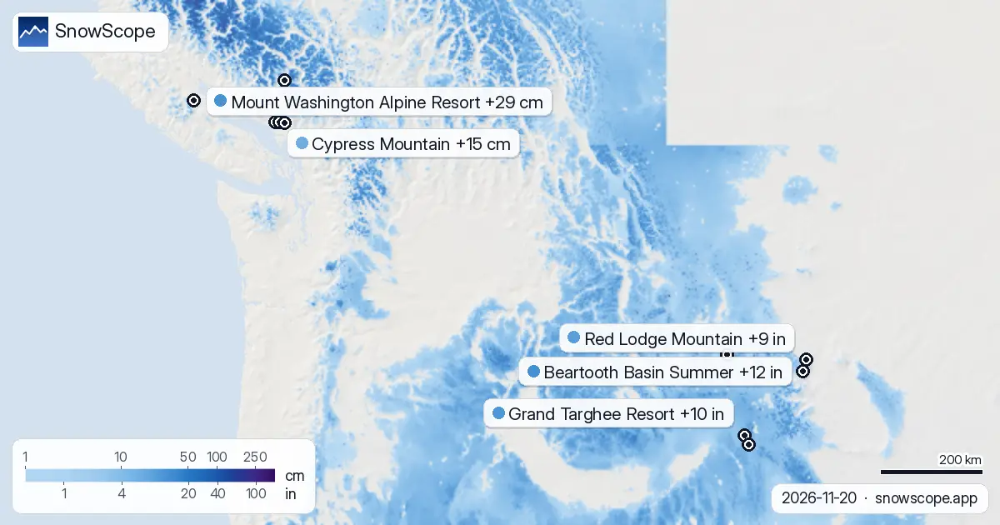

Les Alpes recevront 121 cm de neige d'ici dimanche ; Beartooth Basin en tête en Amérique du Nord
Un grand système neigeux traversera les Alpes ce week-end, apportant le plus grand stockage d'eau à Alpe d'Huez Grand Domaine avec 121 cm prévus d'ici dimanche. En Amérique du Nord, Beartooth Basin Summer connaîtra les plus fortes chutes de neige avec 31 cm sur la même période.
Consultez les prévisions neige en temps réel pour Alpe d'Huez Grand Domaine sur l'application SnowScopeHauteurs de neige, alertes poudreuse et carte 3D, gratuitement.Alpes : événement neigeux majeur de vendredi à dimanche
La région alpine s'oriente vers un événement neigeux significatif. SnowScope montre qu'Alpe d'Huez accumulera le plus : 121 cm d'ici dimanche. Cette neige tombera sur une large gamme d'altitudes car la limite de neige se situe à 2 300 m, les terrains plus bas captureront donc aussi les précipitations.
Jungfraujoch Snow Fun Park se classe deuxième dans les Alpes avec 113 cm prévus, bien qu'aujourd'hui et demain n'en verront que 23 cm ; la majeure partie tombe plus tard dans la période. La Grave, à 3 543 m, recevra 108 cm mais fera face à une limite de neige légèrement plus élevée à 2 900 m, laissant les terrains en dessous de cette altitude avec de la pluie ou de la neige mouillée.
Quatre stations françaises complètent le top cinq : Le Grand Domaine (107 cm), Arêches Beaufort (102 cm), Les 7 Laux (94 cm) et Orelle (92 cm). Les limites de neige sur ces sites varient de 2 200 à 2 500 m, les pistes de mi-montagne verront donc une bonne accumulation tandis que les pentes très basses peuvent voir des précipitations mixtes.
| # | Station | Région | +24 h | +72 h | Limite pluie-neige |
|---|---|---|---|---|---|
| 1 | Alpe d'Huez Grand Domaine | Alpes · France | 5 cm | 121 cm | 2 300 m |
| 2 | Jungfraujoch Snow Fun Park | Alpes · Suisse | 23 cm | 113 cm | 3 100 m |
| 3 | La Grave | Alpes · France | 5 cm | 108 cm | 2 900 m |
| 4 | Le Grand Domaine | Alpes · France | 7 cm | 107 cm | 2 500 m |
| 5 | Arêches Beaufort | Alpes · France | 7 cm | 102 cm | 2 500 m |
| 6 | Engelberg Titlis | Alpes · Suisse | 22 cm | 96 cm | 2 200 m |
| 7 | Les 7 Laux | Alpes · France | 5 cm | 94 cm | 2 400 m |
| 8 | Orelle | Alpes · France | 7 cm | 92 cm | 2 500 m |
| # | Station | Région | +24 h | +72 h | Limite pluie-neige |
|---|---|---|---|---|---|
| 1 | Beartooth Basin Summer | Ouest américain · États-Unis | 10 in (26 cm) | 12 in (31 cm) | 4 900 ft (1 500 m) |
| 2 | Grand Targhee Resort | Ouest américain · États-Unis | 7 in (19 cm) | 10 in (25 cm) | 4 900 ft (1 500 m) |
| 3 | Jackson Hole | Ouest américain · États-Unis | 7 in (18 cm) | 10 in (25 cm) | 5 200 ft (1 600 m) |
| 4 | Red Lodge Mountain | Ouest américain · États-Unis | 7 in (18 cm) | 9 in (22 cm) | 4 300 ft (1 300 m) |
| 5 | Big Sky Resort | Ouest américain · États-Unis | 7 in (17 cm) | 8 in (20 cm) | 5 200 ft (1 600 m) |
| 6 | Telluride | Ouest américain · États-Unis | 6 in (16 cm) | 8 in (20 cm) | 8 900 ft (2 700 m) |
| 7 | Hurricane Ridge | Ouest américain · États-Unis | 0 in (1 cm) | 8 in (20 cm) | 3 900 ft (1 200 m) |
| 8 | Antelope Butte | Ouest américain · États-Unis | 6 in (16 cm) | 7 in (19 cm) | – |
| # | Station | Région | +24 h | +72 h | Limite pluie-neige |
|---|---|---|---|---|---|
| 1 | Mount Washington Alpine Resort | Ouest canadien · Canada | 0 cm | 29 cm | 600 m |
| 2 | Cypress Mountain | Ouest canadien · Canada | 0 cm | 15 cm | 800 m |
| 3 | Grouse Mountain | Ouest canadien · Canada | 0 cm | 15 cm | 800 m |
| 4 | Mt Seymour | Ouest canadien · Canada | 0 cm | 11 cm | – |
| 5 | Whistler Blackcomb | Ouest canadien · Canada | 0 cm | 11 cm | 1 000 m |
| 6 | Mount Cain Alpine Park | Ouest canadien · Canada | 0 cm | 10 cm | 600 m |
| 7 | Ski Callaghan | Ouest canadien · Canada | 0 cm | 8 cm | – |
| 8 | Apex | Ouest canadien · Canada | 0 cm | 7 cm | 900 m |

États-Unis de l'Ouest : Beartooth Basin Summer en tête avec 31 cm
Dans l'Ouest américain, Beartooth Basin Summer se distingue avec 26 cm arrivant dans les 24 prochaines heures et 31 cm au total d'ici dimanche. La limite de neige se situe à 1 500 m, maintenant les précipitations sèches sur la majeure partie du terrain. Grand Targhee Resort et Jackson Hole suivent tous deux avec 25 cm jusqu'à dimanche.
Red Lodge Mountain, Big Sky Resort et Telluride suivent avec 20 à 22 cm chacun. Toutes ces montagnes se situent bien au-dessus de leurs limites de neige respectives, donc la nouvelle neige devrait être sèche et skiable. Seul Hurricane Ridge affiche une accumulation faible à 20 cm, reflétant une dynamique plus faible dans cette région.

Ouest canadien : Mount Washington en tête mais pas de neige aujourd'hui
L'Ouest canadien verra la neige commencer demain, sans neige fraîche prévue aujourd'hui dans aucune station. Mount Washington Alpine Resort en tête avec 29 cm d'ici dimanche, suivi de Cypress Mountain et Grouse Mountain à 15 cm chacun. Les limites de neige varient de 600 à 1 000 m, donc le terrain du haut alpin capturera la neige sèche tandis que les pentes plus basses peuvent voir de la pluie ou de la neige mouillée.
Whistler Blackcomb et Apex affichent tous deux une accumulation modeste autour de 10 cm, reflétant leurs altitudes plus basses et leur exposition moins importante au système. Le timing est clé ici : toute l'action arrive samedi et dimanche, vendredi ne verra donc pas de neige mesurable au sommet.
Stockage d'eau et timing
Ces prévisions mesurent l'eau contenue dans la neige fraîche dans les zones de haute montagne. Les Alpes stockeront considérablement plus d'eau que l'Amérique du Nord, Alpe d'Huez contenant l'équivalent de 121 cm de neige fraîche. Les limites de neige comptent : lorsque les précipitations tombent au-dessus de la limite de neige, elles restent gelées ; en dessous, la pluie domine et l'eau s'écoule rapidement plutôt que de s'accumuler sur la montagne.
Le timing est divisé entre les régions : les Alpes commencent à accumuler aujourd'hui et continuent jusqu'à dimanche. L'événement principal en Amérique du Nord est samedi et dimanche. Planifiez votre approche du terrain en fonction de ces périodes et des hauteurs des limites de neige indiquées sur les cartes.
Conseils aux skieurs
- Alpe d'Huez et Jungfraujoch offriront les meilleures conditions de ski d'ici dimanche dans les Alpes. Montez au-dessus de 2 300 m à Alpe d'Huez pour rester sur de la neige sèche ; les pistes basses peuvent conserver de la neige mouillée ou de la pluie.
- Dans l'Ouest américain, Beartooth Basin Summer aura les meilleures conditions vendredi et samedi. Toutes les stations des Montagnes Rocheuses du nord restent au-dessus de leurs limites de neige, donc la poudreuse sera sèche.
- La neige de l'Ouest canadien n'arrive que samedi. Si vous y êtes vendredi, vérifiez le bulletin d'avalanche officiel pour tout problème de stabilité existant avant de vous aventurer hors-piste après l'arrivée de la nouvelle neige.
- Surveillez la hauteur de la limite de neige à votre station choisie : les terrains sous la limite peuvent connaître de la pluie au lieu de la neige, réduisant le stockage d'eau et créant des problèmes de stabilité où l'ancienne neige rencontre la nouvelle pluie.
- Ce sont des estimations pour les pentes supérieures. La profondeur réelle de neige à un endroit donné dépend du transport du vent et de la topographie locale. Utilisez la carte de SnowScope pour vérifier la profondeur à votre terrain prévu.
À propos de ces chiffres
Les hauteurs de neige des stations sont la neige la plus épaisse sur le haut du domaine à la date indiquée ; ce sont des estimations pour une zone, pas une mesure en un point. Les prévisions peuvent changer. Consultez toujours le bulletin d'avalanche officiel avant le hors-piste.
Bulletins d'avalanche officiels: EAWS (Europe) · avalanche.org (US) · Avalanche Canada
Citer ce bulletin
Pour la recherche, l'enseignement ou la presse : chiffres et graphiques réutilisables librement sous CC BY 4.0 avec cette citation.
SnowScope (2026), Les Alpes recevront 121 cm de neige d'ici dimanche ; Beartooth Basin en tête en Amérique du Nord, https://snowscope.app/blog/fr/2026/11/where-most-snow-falls-next-72-hours-20-november-2026.html, consulté le 2026-11-20
SnowScope (Atlas Labs). (2026, November 20). Les Alpes recevront 121 cm de neige d'ici dimanche ; Beartooth Basin en tête en Amérique du Nord. SnowScope snow reports. https://snowscope.app/blog/fr/2026/11/where-most-snow-falls-next-72-hours-20-november-2026.html
BibTeX
@misc{snowscope2026wheremostsnowfallsnext72,
author = {{SnowScope (Atlas Labs)}},
title = {Les Alpes recevront 121 cm de neige d'ici dimanche ; Beartooth Basin en tête en Amérique du Nord},
year = {2026},
month = nov,
howpublished = {\url{https://snowscope.app/blog/fr/2026/11/where-most-snow-falls-next-72-hours-20-november-2026.html}},
note = {Published 2026-11-21 10:18 UTC; accessed 2026-11-20}
}· CC BY 4.0 · Méthodes, données et outils →
Suivre Alpe d'Huez Grand Domaine
Gratuit : un message quand la neige arrive, et la météo chaque matin.